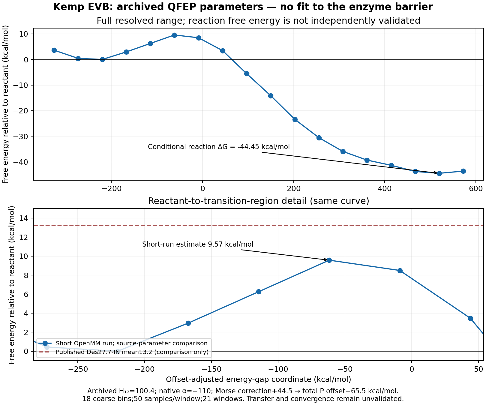
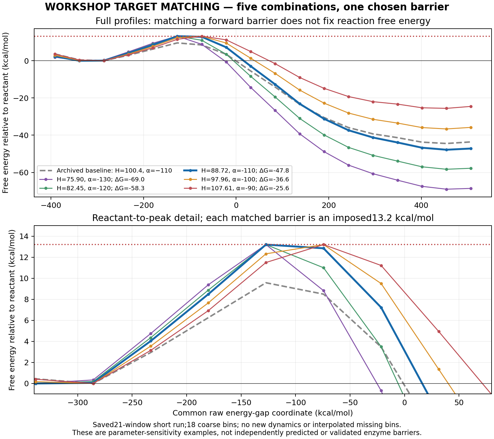
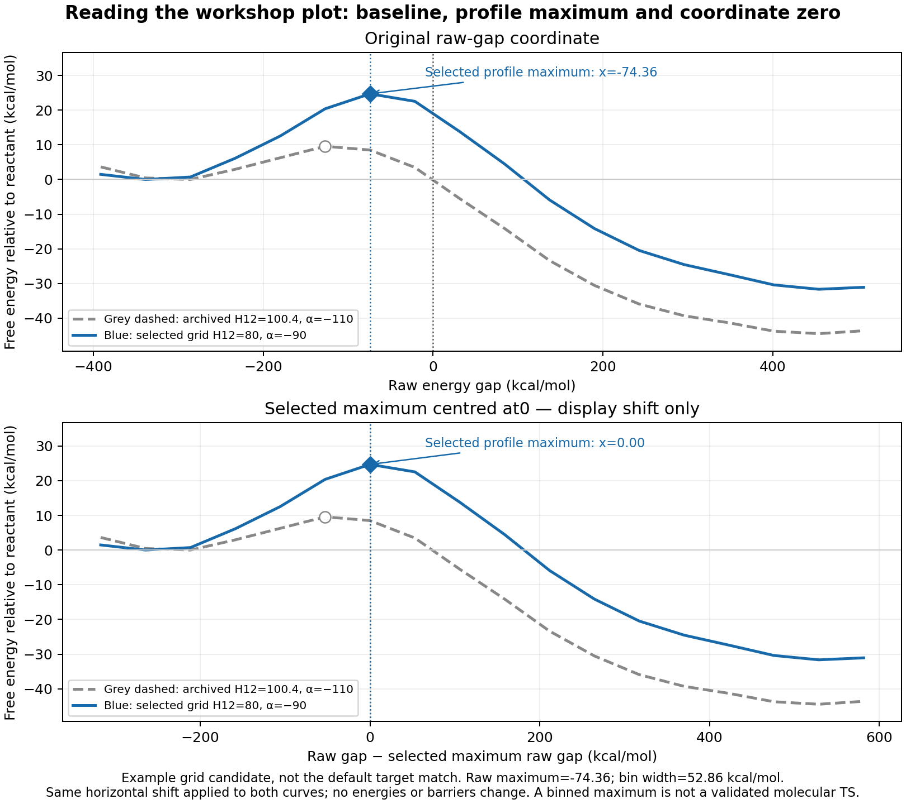
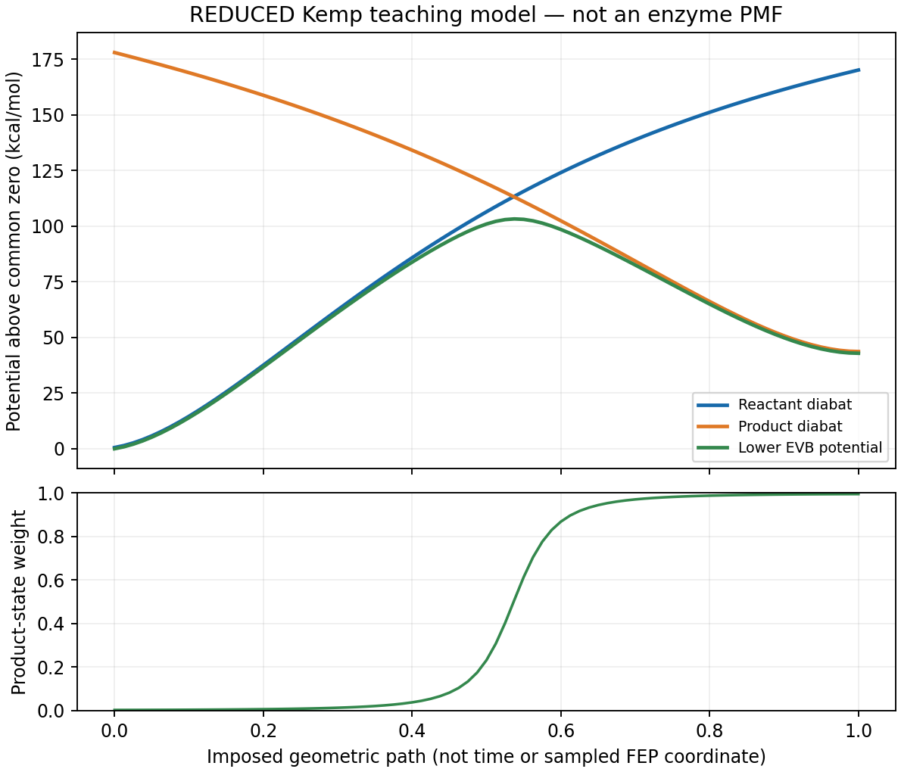
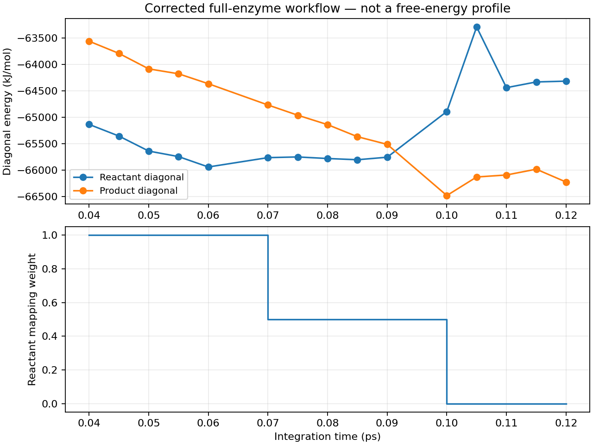

<!doctype html><meta charset="utf-8"><title>Kemp EVB presentation</title><style>body{margin:0;background:#f5f8fc;color:#14354e;font:24px sans-serif}section{display:none;padding:4vh 6vw;height:84vh;overflow:auto}section.active{display:block}h1{font-size:36px}li{margin:20px 0;line-height:1.35}img{max-height:38vh;max-width:90%}footer{font-size:14px;margin-top:20px}nav{position:fixed;bottom:0;background:#fff;width:100%;padding:12px}button{font-size:18px;margin-right:14px}</style><section><h1>EVB with Kemp elimination: one method, two engines</h1><ul><li>30-minute talk, then30-minute practical.</li><li>Understand states, coupling, offsets and mapping/FEP.</li><li>Compare the paper&#x27;s Q6 calculation with an OpenMM adaptation.</li><li>Today: saved results and target-matching exercises, not a validated reproduction.</li></ul><footer>1 / 26 · talk</footer></section><section><h1>Define the Kemp reaction and mapped states</h1><ul><li>Asp162 abstracts the proton from5-nitrobenzisoxazole.</li><li>CH-HT and OR-NR break; Asp OD1-HT forms.</li><li>Other bonded terms, charges and nonbonded parameters also change.</li><li>R/P share the same atoms; the22-atom reactive region has charge −1 in both.</li></ul><footer>2 / 26 · talk</footer></section><section><h1>What is EVB? What is a diabatic state?</h1><ul><li>EVB describes a reaction by mixing classical bonding/charge patterns.</li><li>A diabat is one force-field state, not a second set of atoms.</li><li>Each state defines bonded terms, charges, LJ and exclusion rules.</li><li>Reference calibration and ensemble sampling are needed for free energies.</li></ul><footer>3 / 26 · talk</footer></section><section><h1>The two-state EVB Hamiltonian</h1><ul><li>H = [[V_R, H12], [H12, V_P + alpha]].</li><li>Its lower eigenvalue is the coupled ground-state potential.</li><li>Eigenvector weights describe state mixing.</li><li>The same matrix algebra applies in Q6 and OpenMM.</li></ul><footer>4 / 26 · talk</footer></section><section><h1>Coupling, offset and barrier are different quantities</h1><ul><li>Alpha sets the relative diabatic energy origin.</li><li>H12 mixes the states and opens an avoided crossing.</li><li>Neither coefficient is the activation barrier.</li><li>Fit independent reference evidence for a physical model; target matching today is a labelled exercise.</li></ul><footer>5 / 26 · talk</footer></section><section><h1>What are Q6, OpenMM and EVBOpenMM?</h1><ul><li>Q6: standalone MD/EVB toolkit, including Qdyn dynamics and QFEP analysis.</li><li>OpenMM: programmable MD engine with Python APIs and CPU/GPU kernels.</li><li>EVBOpenMM: the added EVB force/model/workflow layer used here.</li><li>File formats, analysis, boundaries and precision can differ even when EVB theory is shared.</li></ul><footer>6 / 26 · talk</footer></section><section><h1>Mapping/FEP and profile reconstruction</h1><ul><li>Sample lambda*V_R + (1-lambda)*V_P at several mapping windows.</li><li>Save both state energies at every sampled configuration.</li><li>Mix energies per frame, then reweight and bin consistently.</li><li>Lambda is not physical reaction time or the adiabatic state-mixing weight.</li></ul><footer>7 / 26 · talk</footer></section><section><h1>What the Nature paper simulated</h1><ul><li>Conventional MD: Amber ff19SB/GAFF2 with OPC.</li><li>EVB: Q6, OPLS-AA, TIP3P, SCAAS sphere and local reaction field.</li><li>30 replicas/case;30 ns equilibration;51 windows x200 ps production.</li><li>Des27.7-IN computed mean13.2 +/-0.6 kcal/mol; uncertainty is replica SD.</li></ul><footer>8 / 26 · talk</footer></section><section><h1>What this OpenMM example implements</h1><ul><li>All6330 atoms and the supplied reactive changes are imported for Des27.7-IN.</li><li>Workflow: minimization, heating, equilibration and restartable mapping production.</li><li>Boundary changes: direct nonperiodic electrostatics, droplet wall and fixed outer protein.</li><li>No Q6 LRF equivalence or converged physical barrier is claimed.</li></ul><footer>9 / 26 · talk</footer></section><section><h1>Recovered parameters and energy conventions</h1><ul><li>Archived qfep.inp: constant H12=100.4 and native alpha = -110 kcal/mol.</li><li>Reactive FEP sections match the Des27 inputs after Q-index mapping.</li><li>Q6 Morse minimum=-De; EVBOpenMM minimum=0.</li><li>+44.5 on P preserves the relative convention: total P offset=-65.5 kcal/mol.</li></ul><footer>10 / 26 · talk</footer></section><section><h1>Read the source-parameter comparison</h1><ul><li>Saved21-window short OpenMM run;50 records/window.</li><li>At18 coarse bins the source-based comparison is about 9.57 kcal/mol.</li><li>No fit to13.2 was used for this curve.</li><li>Changed boundary, short correlated data and coarse binning limit interpretation.</li></ul><footer>11 / 26 · talk</footer></section><section><h1>Many parameter pairs can match one target</h1><ul><li>Reuse the saved energies: no additional MD for the workshop.</li><li>25 grid combinations plus5 examples matching the chosen13.2 barrier.</li><li>One example: H12 about 88.72, native alpha = -110 kcal/mol.</li><li>Matching pairs have different reaction free energies; this is not unique physical calibration.</li></ul><footer>12 / 26 · talk</footer></section><section><h1>Grey baseline, profile maximum and coordinate zero</h1><ul><li>Grey dashed: archived baseline on the same energies; blue: selected candidate.</li><li>The diamond marks a binned maximum, not a validated molecular TS.</li><li>Raw or corrected gap zero need not be a free-energy maximum.</li><li>TS-centred view applies the same display shift to both curves; energies/barriers do not change.</li></ul><footer>13 / 26 · talk</footer></section><section><h1>Practical: first 15 minutes</h1><ul><li>0-5: inspect the reaction and Q atom mapping.</li><li>5-10: run the core or open its saved viewer; vary coupling/offset.</li><li>10-15: read the archived input and recompute the source profile.</li><li>Use run_practical.py or the offline index; the sample energies are included.</li></ul><footer>14 / 26 · practical</footer></section><section><h1>Practical: next 15 minutes</h1><ul><li>15-25: compare parameter pairs matching one barrier; record reaction free energies.</li><li>25-30: select H12=80, alpha = -90 and toggle the common display shift.</li><li>Identify grey baseline, blue maximum marker and coordinate zero.</li><li>Discuss one shared EVB concept and one Q6/OpenMM implementation difference.</li></ul><footer>15 / 26 · practical</footer></section><section><h1>Backup: five-atom potential exercise</h1><ul><li>Three native Morse terms plus selected C-N harmonic terms.</li><li>81 imposed geometries; illustrative H12/extra offset.</li><li>OpenMM lower eigenvalues checked against EVBOpenMM.</li><li>Enzyme, solvent and most force-field terms are omitted; this is not a PMF.</li></ul><footer>16 / 26 · backup</footer></section><section><h1>Backup: native Morse energy origins</h1><ul><li>Q6: D*(exp(-2*a*dr)-2*exp(-a*dr)), with minimum-De.</li><li>Zero-minimum Morse adds De for every active bond.</li><li>For these terms R gains182.75, P gains138.25 kcal/mol.</li><li>P-R shifts by-44.5, so add+44.5 to P for convention equivalence.</li></ul><footer>17 / 26 · backup</footer></section><section><h1>Backup: full-enzyme execution evidence</h1><ul><li>6330 atoms; corrected native LJ import.</li><li>Minimization, heating, equilibration and three production windows executed.</li><li>480 MD steps at 0.25 fs; checkpoint pause/resume tested.</li><li>This saved DCD is a0.12 ps engineering test, not an observed reaction.</li></ul><footer>18 / 26 · backup</footer></section><section><h1>Backup: source-profile analysis order</h1><ul><li>Native QFEP input supplies100.4 coupling and-110 state offset.</li><li>Constant coupling permits reanalysis from the saved state energies.</li><li>Evaluate the lower eigenvalue per frame before exponential bin averaging.</li><li>The sample cannot support native skip4000/minimum 1000 settings; actual settings are disclosed.</li></ul><footer>19 / 26 · backup</footer></section><section><h1>Backup: how to run longer simulations</h1><ul><li>Change equilibration_steps and window_equilibration_steps in the chosen JSON.</li><li>production_steps_per_window and lambda_schedule set the production length.</li><li>Use a new output directory for changed settings and a separate replica seed.</li><li>The long template collects10.2 ns; CPU runtime can greatly exceed one night.</li></ul><footer>20 / 26 · backup</footer></section><section><h1>Backup: Amber does work with OpenMM</h1><ul><li>OpenMM reads Amber prmtop/inpcrd files.</li><li>AmberTools is needed to rebuild the optional Amber lane, not this practical.</li><li>That classical compatibility example is separate from OPLS EVB.</li><li>No Q6, Rosetta or Voth/LAMMPS build is required for today.</li></ul><footer>21 / 26 · backup</footer></section><section><h1>Paper, supporting information and deposited inputs</h1><ul><li>Listov et al., Complete computational design of high-efficiency Kemp elimination enzymes, Nature (2025).</li><li>Article: doi:10.1038/s41586-025-09136-2; associated Supplementary Information, Table 3.</li><li>Simulation inputs: Zenodo doi:10.5281/zenodo.14563437 (EVB_Simulations.zip).</li><li>Design code: Fleishman-Lab/denovoKemp; design code and EVB inputs have different roles.</li></ul><footer>22 / 26 · backup</footer></section><section><h1>Related protocol evidence: do not conflate the datasets</h1><ul><li>Gutierrez-Rus et al., JACS (2025), doi:10.1021/jacs.4c09428, with its Supporting Information.</li><li>GNCA Kemp inputs: Zenodo doi:10.5281/zenodo.12666978; Kemp_variants.zip.</li><li>Recovered qfep.inp supplies H12=100.4 and alpha=-110 kcal/mol.</li><li>GNCA is a different scaffold: these are protocol evidence, not replacement Des27 coordinates or proof of parameter transfer.</li></ul><footer>23 / 26 · backup</footer></section><section><h1>Atom names: read the actual mapping</h1><ul><li>Actual PDB identities: SUB257 and catalytic ASP162; stale FEP comments use different residue numbers.</li><li>CH=proton-bearing substrate carbon; HT=transferred H; NR=ring nitrogen; OR=ring oxygen.</li><li>Asp OD1 accepts HT; OD2 is the other oxygen; CG is its carboxyl carbon.</li><li>Q indices are local reactive indices; PDB serials are global atom identifiers. Atom names are not force-field types.</li></ul><footer>24 / 26 · backup</footer></section><section><h1>Detailed Kemp mechanism and state bookkeeping</h1><ul><li>R: CH-HT and OR-NR bonded; substrate neutral, Asp carboxylate -1.</li><li>Coupled proton abstraction and ring opening: OD1 accepts HT, CH-NR gains nitrile character, OR gains phenoxide character.</li><li>P: OD1-HT bonded; CH-HT and OR-NR absent; nitrile/phenoxide product -1 and neutral AspH.</li><li>Total reactive charge stays -1. This two-state model introduces no separately sampled carbanion intermediate.</li></ul><footer>25 / 26 · backup</footer></section><section><h1>Published Q6 versus our short OpenMM example</h1><ul><li>SI Table3: Des27.7-IN Q6 barrier=13.2 +/-0.6 kcal/mol (replica SD).</li><li>Short archived-parameter OpenMM estimate=9.57; no independent-replica uncertainty.</li><li>Difference=-3.63 kcal/mol; different boundary and limited sampling prevent an agreement claim.</li><li>A target-matched 13.2 workshop curve is not independent reproduction.</li></ul><footer>26 / 26 · backup</footer></section><nav><button onclick="go(-1)">Previous</button><button onclick="go(1)">Next</button><span>Arrow keys navigate · F11 for full screen</span></nav><script>let n=0;const slides=[...document.querySelectorAll("section")];function go(d){n=Math.max(0,Math.min(slides.length-1,n+d));slides.forEach((s,i)=>s.classList.toggle("active",i===n));}document.addEventListener("keydown",e=>{if(e.key==="ArrowRight")go(1);if(e.key==="ArrowLeft")go(-1);});go(0);</script>